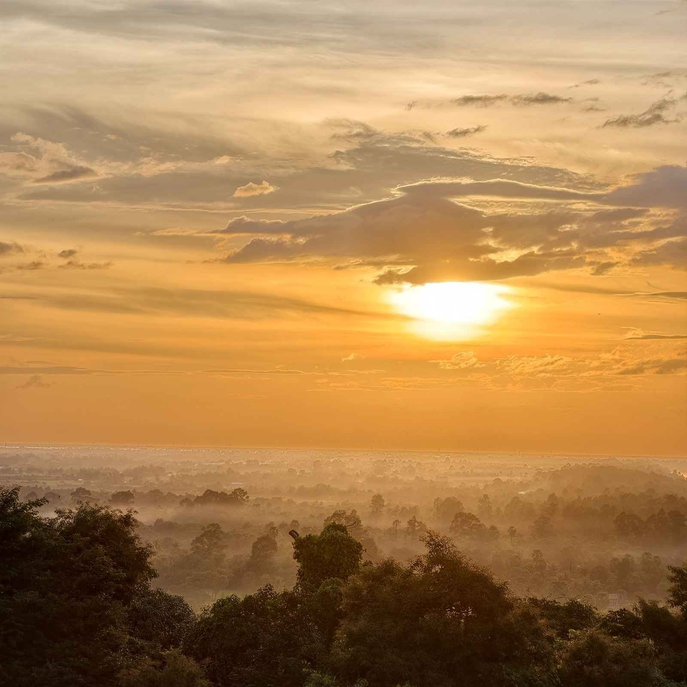
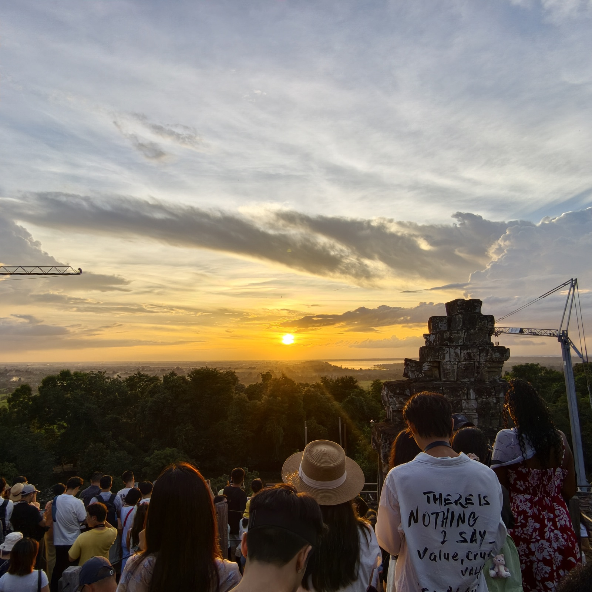
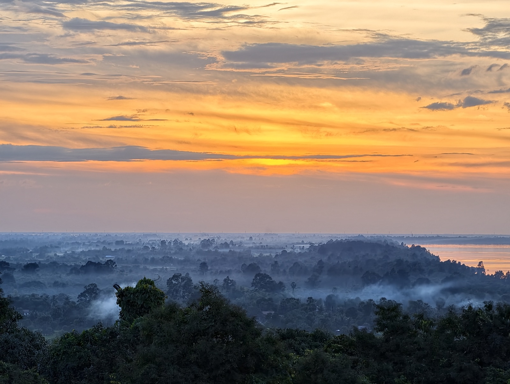
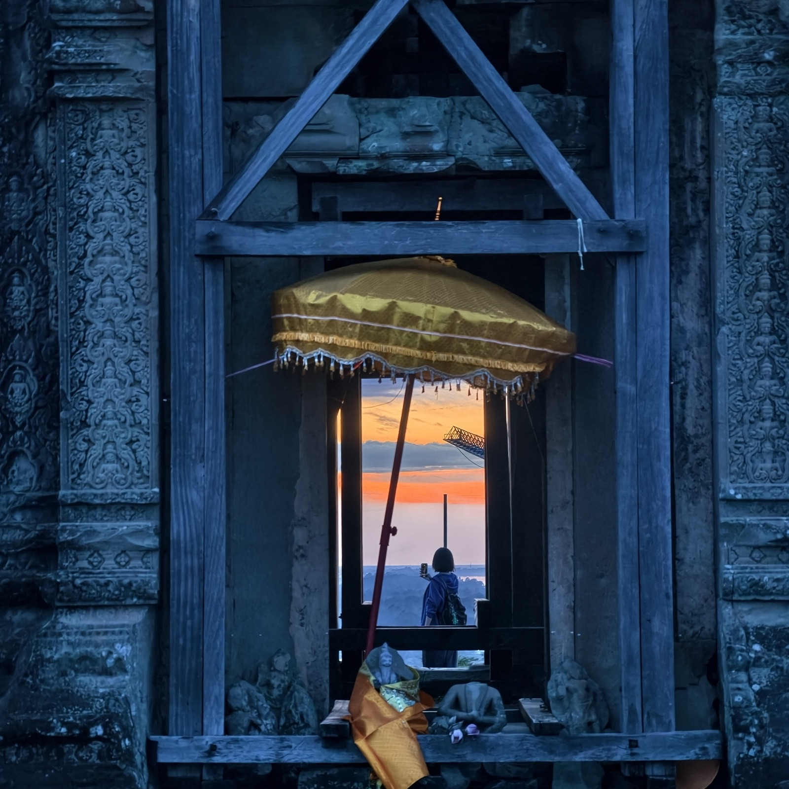

巴肯山
九世纪末，耶输跋摩一世把都城从罗洛士迁到巴肯山一带，山上的巴肯寺是他建的第一座国庙，也是「庙山」形制的起点。如今山还是那座山，庙多半成了残迹，人们傍晚上山，主要是为了看日落——山顶限流，一次只放三百人。




九世纪末，耶输跋摩一世把都城从罗洛士迁到巴肯山一带，山上的巴肯寺是他建的第一座国庙，也是「庙山」形制的起点。如今山还是那座山，庙多半成了残迹，人们傍晚上山，主要是为了看日落——山顶限流，一次只放三百人。



